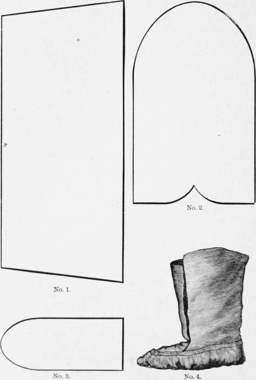

Practical Points On Camping Out. Part 2
Description
This section is from the book "American Game Fishes", by W. A. Perry. Also available from Amazon: American Game Fishes: Their Habits, Habitat, and Peculiarities; How, When, and Where to Angle for Them.
Practical Points On Camping Out. Part 2
For wading, for walking in wet weather, or in wet snow, I have never found anything better than the Hannaford ventilated rubber boot, with rubber lining. If this boot gets wet inside, either from perspiration or from getting beyond your depth in water, take it off, pour out the water, and in a few minutes the boot will be dry again, and your socks and trousers are not dyed red, green or blue, as they would have been if the boot had been lined with felt of either color.
When the upper portion of the leg of the boot is not needed for wading, turn it down clear to the foot, then turn it and bring the upper edge to the top of the stiffened portion of the boot-leg. The lower end of the fold will now be midway between the knee and the foot. Give this two turns upward, and you have the surplus material neatly reefed in, just below the knee, where it will stay a week if desired, and give little trouble by catching on brush or other obstructions.
Felt boots are a favorite with lumbermen for winter-wear, and, with rubber shoes over them, make a comfortable footgear for extremely cold weather. Rubber wading-trousers and wading-stockings are good in fishing-waters, where there is little walking to do on dry land; but where there is much of this to do, they make the wearer uncomfortable because of the lack of proper ventilation. After walking a few hundred yards in them, either through woods or fields, in hot weather (and the weather is usually hot when men go Trouting) you will get so hot that you will wish you had never seen the pesky breeches, and that you had worn simply a pair of hip rubber boots. If the water be too deep for hip-boots, I prefer to wear simply a pair of old leather shoes, and to get wet; for if one be dressed wholly in heavy woolen clothing there is little danger of any serious results from getting wet.
For dry weather and dry land, winter or summer, in the woods, in the mountains or on the prairies, the most comfortable and serviceable of all foot-gear is a pair of heavy buckskin moccasins. It is the most natural, reasonable, perfeet piece of foot-wear ever known to human beings. The only time I ever feel thankful to the man who invented Indians is when I get away from civilization and put on a pair of moccasins. I then forget about my corns and other troubles, and wish I could stay in the wilderness forever.
For fall and winter-hunting they should be made large enough to permit the wearing of two pairs of socks, and if the rocks hurt your feet put a pair of sole leather insoles in the moccasins. The accompanying diagram will enable any glove-maker or shoemaker to make a pair.
If you wear leather shoes you will need, in addition, a pair of leggings. I have never seen a pair of these that I liked, and so devised an improvement on existing styles. I bought a pair of ordinary brown canvas leggings, that were made to buckle on the inside. I cut off the straps and buckles, and sewed on, at one side of the opening, a flap half an inch wide, in such a position that when the legging was wrapped tightly around my leg, one edge overlapping the other about two inches, this flap would nearly meet the outer edge. Then put eyelets in this flap and in the opposite edge of the legging. I now take two extra-long shoe-laces, splice them, and, beginning at the bottom, lace the leggings up as I would a shoe, and have a leg-gear that fits, sets easy, and has no hooks or buckles to catch in brush or weeds, and which, consequently, saves much of the annoyance that is inflicted on the wearer of any of the other styles in the market.
Buckskin makes about the best glove for all-round work, except for wet weather, and then a pair of rubber gloves will add greatly to your comfort. For hunting, in extremely cold weather, a heavy, loose yarn-mitten, that you can pull on over your buckskin glove, is invaluable.
Snow-shoes are indispensable for winter-hunting, either in the North-woods or in the mountains. Those made by weaving raw-hide thongs on a wooden bow are best. They can usually be bought of the large dealers in the cities or in the settlement or town nearest to the hunting country.
The War-Bag
And now that you have made up your list of wearing apparel, you want something in which to carry that part of it that you do not put on at the start. The simplest, cheapest, and one of the most serviceable articles for this purpose is an ordinary seamless grain-bag. It costs twenty-five cents, and is more popular among loggers, freighters, cowboys, miners and other professional rustlers than any other "trunk" in the market. In such circles it is universally known as the "war-bag." Into it go boots, clothing, grub, ropes, tools and everything else that cannot be carried elsewhere. It is always ready and there is always room in it for something else. The only objection to it is that the thing you want is sure to be at the bottom of it; but it is the work of only a minute to dump the whole business on the earth, get what you want and stow the rest away again. It is well to put a coat of water-proof paint on the bag in order that if caught in a rain it will keep your outfit dry. The rubber companies make a bag, of rubber or Mackintosh, that is thoroughly water-proof, and is an excellent thing to have in wet weather, or in case your boat capsizes when your worldly effects are on board; but it is rather expensive, costing about six dollars.
If, however, you are to travel entirely by rail or team, a trunk is admissible. It should be as small as possible, should be covered with raw-hide and well ironed. A small trunk may even be carried on a pack-mule, but it is a cruelty to the mule to put such a thing on him, and it is furthermore a constant source of annoyance to its owner and to the packer.
Toilet-Case
A valuable toilet-case is made of two pieces of drilling hirty-six inches long-one nine inches wide, the other eighteen. The wider piece is cut square at one end and tapered to a point at the other. The narrow strip is now laid through the center of the wide one, sewed across each end and along one edge, being held full so as to shorten it to the length of the wide part of the longer strip. The space is now divided into a series of pockets, varying in width from one to six inches, by running seams through both thicknesses of the cloth. Now sew a yard of tape to the pointed end of the outer piece of drilling, bind or hem the raw edges of the goods, and you have a most convenient catch-all for your soap, towel, comb, hair-brush, tooth-brush, needles, thread, bachelor buttons, and various other small articles that would get lost anywhere else.
Continue to: